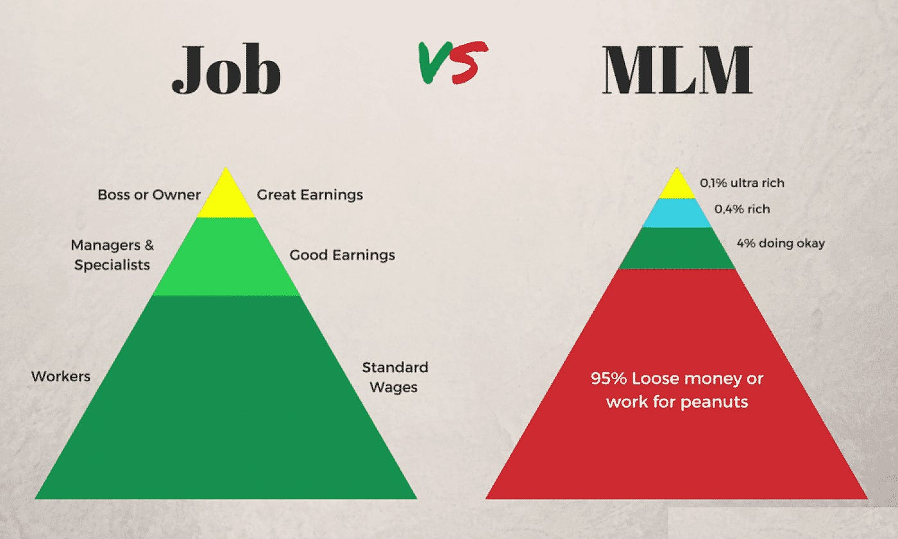

Snake oil is a term used to describe deceptive marketing, health care fraud, or a scam.
Top 3 snakeoils!

Multi-level marketing (MLM), also called network marketing or pyramid selling, is a controversial and sometimes illegal marketing strategy for the sale of products or services in which the revenue of the MLM company is derived from a non-salaried workforce selling the company's products or services, while the earnings of the participants are derived from a pyramid-shaped or binary compensation commission system.
In multi-level marketing, the compensation plan usually pays out to participants from two potential revenue streams. The first is based on a sales commission from directly selling the product or service; the second is paid out from commissions based upon the wholesale purchases made by other sellers whom the participant has recruited to also sell product. In the organizational hierarchy of MLM companies, recruited participants (as well as those whom the recruit recruits) are referred to as one's downline distributors.
MLM salespeople are, therefore, expected to sell products directly to end-user retail consumers by means of relationship referrals and word of mouth marketing, but more importantly they are incentivized to recruit others to join the company's distribution chain as fellow salespeople so that these can become downline distributors. According to a report that studied the business models of 350 MLM companies in the United States, published on the Federal Trade Commission's website, at least 99% of people who join MLM companies lose money. Nonetheless, MLM companies function because downline participants are encouraged to hold onto the belief that they can achieve large returns, while the statistical improbability of this is de-emphasized. MLM companies have been made illegal or otherwise strictly regulated in some jurisdictions as merely variations of the traditional pyramid scheme
Buy one - get two!